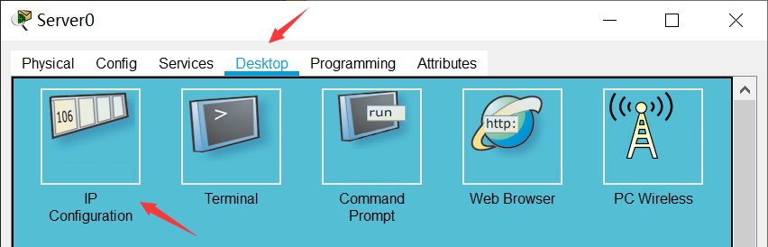
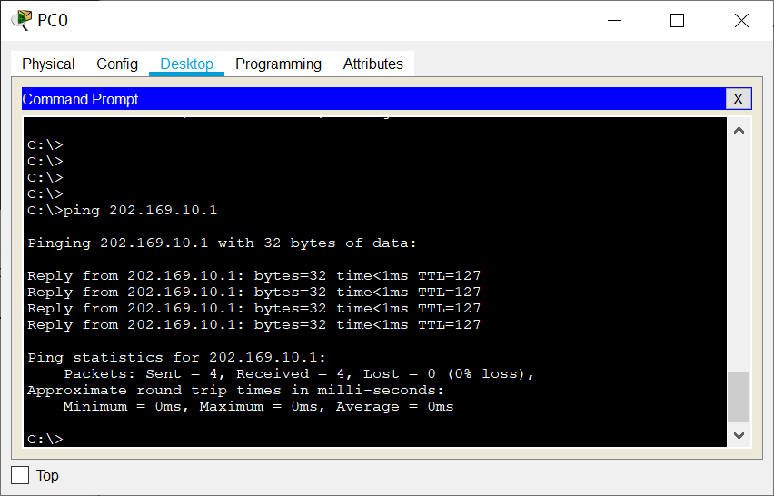
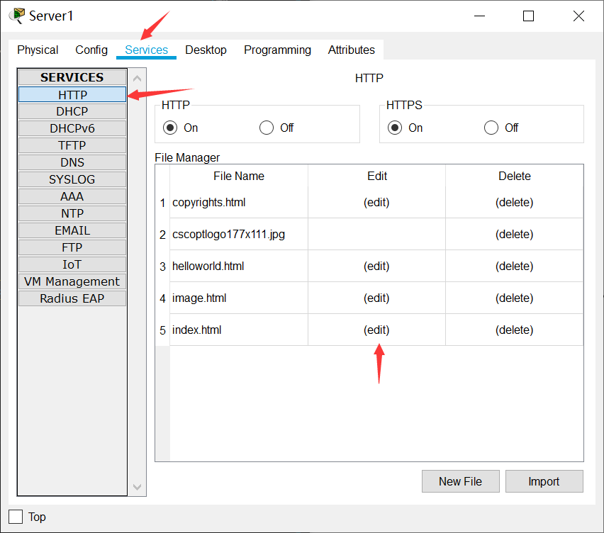
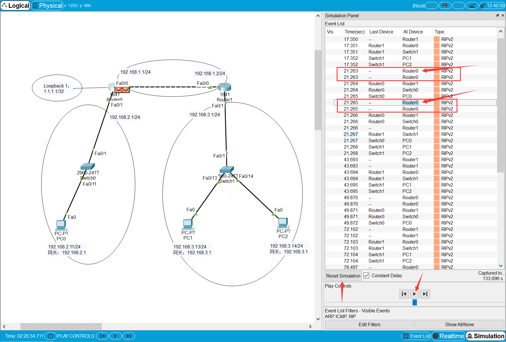
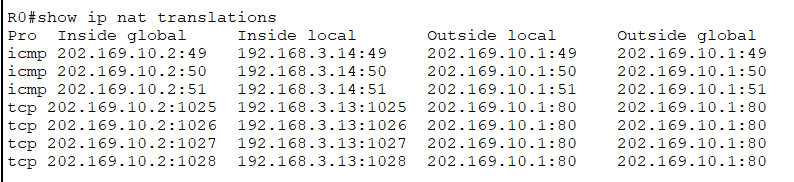
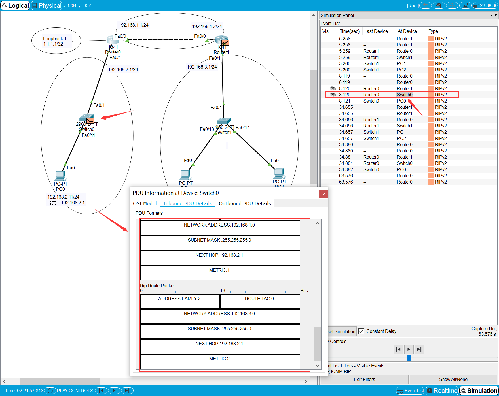
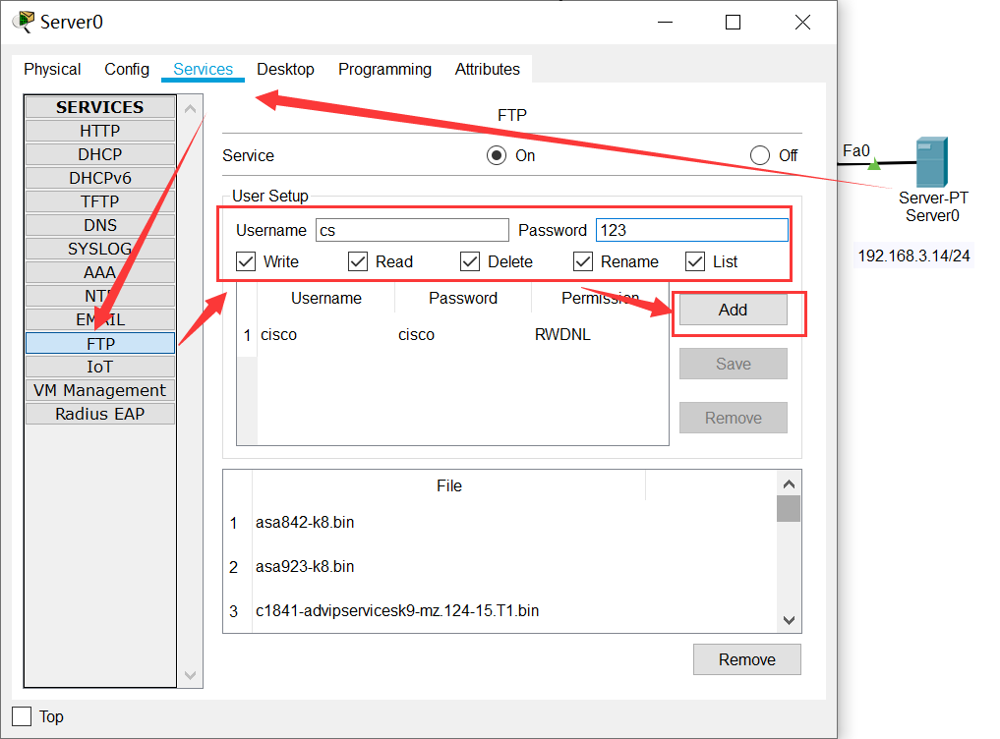

1. 实验目的
了解网络地址转换的工作原理，掌握网络地址转换的配置方法。
2. 实验任务
掌握静态NAT、动态NAT、NAPT、NAT Server-NAT的配置方法，在cisc packet tracer上截取ftp报文，理解NAT地址转换技术的原理。
3. 实验原理
3.1. NAT概要
网络地址转换NAT（Network Address Translator）技术是在1994年提出的，主要是为了解决全球 IPv4地址短缺的问题，它将多个内部私有地址映射为少数几个甚至一个公网IP地址，以减少公网IP地址的使用。同时，NAT还起到了隐藏内部网络结构的作用，对内网主机而言具有一定的安全性。
本实验需要完成4种NAT技术的配置：静态NAT（Static NAT）、动态地址NAT（Pooled NAT）、网络地址与端口转换NAPT（Network Address and Port Translation）、NAT Server-NAT 服务器技术。
3.2. 静态NAT
静态NAT实现了私有地址和共有地址的一对一映射，其设置最简单、最容易实现的。如果希望一台主机优先使用某个关联地址，或者想要外部网络使用一个指定的公网地址访问内部服务器时，可以使用静态NAT。然而，一个公网IP只会分配给唯一且固定的内网主机，不节省IP地址。
3.3. 动态NAT
动态NAT是基于地址池来实现私有地址和公有地址的转换。

当内部主机A和主机B需要与公网种的目标地址通信时，网关RTA会从公网地址池种选择一个未使用的公网地址与之做映射。当网关收到回复报文后，会根据之前的映射再次进行转换之后发给对应主机。当不需要此连接时，对应的地址映射将会删除，公网地址也会被恢复到地址池中待用。
缺点：动态NAT地址池中的地址用尽以后，只能等待被占用的公用IP释放后，其他主机才能使用它来访问公网。
静态NAT和动态NAT合成基本NAT，要求同一时刻被映射的内部主机数小于或等于所拥有的外网IP地址数。
3.4. NAPT网络地址端口转换
NAPT允许多个内部地址映射到同一个公有地址的不同端口。它主要利用TCP/UDP的端口实现多个私网地址到1个公网IP地址的映射，其映射形式如下：
（私网IP，TCP/UDP端口号） <–>（公网IP，TCP/UDP端口号）
网络层的ICMP没有端口号，NAPT设备需要对带标记ID字段的ICMP报文单独建立地址映射，其形式为：
（私网IP，ICMP ID号） <–>（公网IP，ICMP ID号）


上图描述了内部主机PCA与外网主机PCB应用地址转换NAPT技术进行通信的过程。其中，内部网络是10.0.1.0/24网段，出口NAT路由器的公网地址只有202.0.0.1一个地址，并且其地址池也只有这唯一的IPv4地址。
（1）当内部主机PCA向外网主机PCB发送一个FTP连接请求，这时从PCA发出的报文的源IP地址是10.0.1.10，源端口号是1001，目的地址是PCB的IP地址6.1.128.10，目的端口号是21。
（2）当这个报文被转发到出口NAT路由器时，NAT路由器就会先查看公网地址池，然后再地址转换表中插入一条记录，分别是转换前的源地址、源端口号和转换后的源地址、源端口号。
（3）NAT路由器按照转换后的源地址和源端口号来重新封装报文，目的地址和端口号不变，并将新报文从出接口发送出去。
（4）当报文被转发到PCB时，PCB收到报文后，会针对该FTP请求报文，发送应答报文，此时PCB应答报文的源地址是PCB的IP地址6.1.128.10，源端口号是21；目的地址和源端口号是转换后的IP地址202.0.0.1和端口号1044。
（5）当这个报文被转发到出口NAT路由器时，路由器根据报文的目的地址和端口号，在将报文转发到内网之前，要先查找地址转换表进行地址转换。将目的地址和端口号转换成内网本地地址10.0.1.10和内网端口号1001，才能保证PCA能够收到应答报文。
（6）路由器将报文重新封装后，将应答报文发送到内部网络，直至报文被转发到PCA。
这就是内网、外网主机之间通过地址转换技术进行通信的基本过程。
3.5. NAT Server-NAT 服务器技术
NAT在使内网用户访问公网的同时，也屏蔽了公网用户访问私网主机的需求。当一个私网需要向公网用户提供Web和SFTP等服务时，私网中的服务器必须随时可供公网用户访问。
通过配置NAT服务器可以使外网用户访问内网服务器。需要配置服务器私网IP地址和端口号转换为公网IP地址和端口号并发布出去。路由器在收到一个公网主机的请求报文后，根据报文的目的IP地址和端口号查询地址转换表项。路由器根据匹配的地址转换表项，将报文的目的IP地址和端口号转换成私网IP地址和端口号，并转发报文到私网中的服务器。

过程分析：主机C需要访问私网服务器，发送报文的目的IP地址是200.10.10.1，目的端口号是80。RTA收到此报文后会查找地址转换表项，并将目的IP地址转换成192.168.1.1，目的端口号保持不变。服务器收到报文后会进行响应，RTA收到私网服务器发来的响应报文后，根据报文的源IP地址192.168.1.1和端口号80查询地址转换表项。然后，路由器根据匹配的地址转换表项，将报文的源IP地址和端口号转换成公网IP地址200.10.10.1和端口号80，并转发报文到目的公网主机。
4. 实验环境与分组
路由器1台，二层交换机2台，计算机2台，服务器2台。
5. 实验组网

IP地址表：
设备名称 |
IP地址 |
|---|---|
Router0-G0/0/0 |
192.168.3.1/24 |
Router0-G0/0/1 |
202.169.10.2/24 |
PC0 |
192.168.3.13/24 |
PC1 |
202.169.10.100/24 |
Server0 |
192.168.3.14/24 |
Server1 |
202.169.10.1/24 |
6. 实验步骤
6.1. 搭建网络拓扑
打开Cisco Packet Tracer软件绘制出组网图。
Router0路由器型号：ISR4321
Switch0和Switch1交换机型号：2960-24TT
备注
路由器和路由器之间的连接线需要使用Copper Cross Over(交叉线)。交换机和路由器、交换机和计算机使用Copper Straight-Through(直通线)
搭建完网络拓扑图后，记得保存好！
6.2. 配置PC和服务器的IP地址
按照下表设置PC0、PC1和PC2这三台电脑的IP地址。
计算机 |
IP地址 |
网关 |
|---|---|---|
PC0 |
192.168.3.13/24 |
192.168.3.1 |
Server0 |
192.168.3.14/24 |
192.168.3.1 |
PC1 |
202.169.10.100/24 |
（可以不用设置网关） |
Server1 |
202.169.10.1/24 |
（可以不用设置网关） |
注：本实验中的外网IP同属一个网段内，可以不用设置网关。
以设置Server0的IP为例，单击Server0图标，在弹出的窗口里点击“Desktop”选项卡，点击“IP Configuration”图标，然后在出现的窗口界面里填写IP address和Subnet Mask。

6.3. 配置路由器基本信息
登录Router0使用下列命令进行基本信息配置：
1Router>enable
2Router#configure terminal
3Router(config)#hostname R0 // 重命名为R0
4R0(config)#no ip domain-lookup // 用于防止DNS解析的命令。如果没有这条命令，当你输入错误的命令时，cisco会尝试连接DNS服务器进行域名解析，浪费时间。
5
6R0(config)#interface g0/0/0 // 进入g0/0/0接口模式
7R0(config-if)#ip address 192.168.3.1 255.255.255.0 //配置g0/0/0接口ip地址
8R0(config-if)#no shutdown // 打开g0/0/0接口（默认接口关闭）
9R0(config-if)#exit
10
11R0(config)#interface g0/0/1 // 进入g0/0/1接口模式
12R0(config-if)#ip address 202.169.10.2 255.255.255.0 //配置g0/0/1接口ip地址
13R0(config-if)#no shutdown // 打开g0/0/1接口（默认接口关闭）
14R0(config-if)#exit
15R0(config)#
配置完成后，可以查看一下R0路由表:

路由表上有两条直连路由，分别是192.168.3.0/24网段和202.169.10.0/24网段。
此时，在R0上验证PC0的连通性，在R0上验证Server1的连通性，如图：

在PC0上验证Server1的连通性，如图：

注意
请思考，此时为什么在R0上能ping通PC0和Server1，但是PC0却ping不通Server1？
请把答案写到实验报告中
6.4. 配置静态NAT映射
6.4.1. 配置R0的静态NAT
登录R0使用下列命令进行基本信息配置：
1R0(config)#interface g0/0/1 // 进入G0/0/1接口
2R0(config-if)#ip nat outside // 将端口G0/0/1设置为外网出口模式
3R0(config-if)#exit
4
5R0(config)#interface g0/0/0 // 进入G0/0/0接口
6R0(config-if)#ip nat inside // 将端口G0/0/0设置为内网入口模式
7R0(config-if)#exit
8
9R0(config)#ip nat inside source static 192.168.3.13 202.169.10.2 // 将PC0映射到公网地址202.169.10.2上
10R0(config)#exit // 退出配置模式
11R0#
提示
在内部本地地址与内部全局地址之间建立静态地址转换的格式：
ip nat inside source static 内部全局地址 内部本地地址
在R0上使用命令“show ip nat translations”查看nat地址转换表
提示
NAT地址表解释
NAT转换表内容依次为：Pro（协议类型）、Inside global（内部全局地址及端口）、Inside local（内部本地地址及端口）、Outside local（外部本地地址及端口）、Outside global（外部全局地址及端口）。
通常来说，内部是机构网络（如校园网、私人企业等），外部是公共互联网。本地地址是内部设备可以看到的地址，全局地址是外部设备可以看到的地址。
Inside global（内部全局地址） 是外部已知内部设备的一个合法的IP地址，它对外代表一个或多个内部本地IP地址。
Inside local（内部本地地址） 分配给内部网络中的计算机的内部私有IP地址。
Outside local（外部本地地址） 是内部已知外部设备的地址，即外部主机在内部网络中表现出来的IP地址。
Outside global（外部全局地址） 分配给外部网络上的主机分配的IP地址。
6.4.2. 测试内外网的连通性
在PC0上验证Server1的连通性，如图：
在Server0上验证Server1的连通性，如图：

注意
请思考，此时为什么在PC0上能ping通Server1，但是Server0却ping不通Server1？
请把答案写到实验报告中
6.5. 配置动态NAT
6.5.1. 清除R0之前的配置
在进行新的nat配置之前，先清除R0之前的配置
1R0>enable
2R0#configure terminal
3R0(config)#no ip nat inside source static 192.168.3.13 202.169.10.2 // 以no开头的命令是取消设置
6.5.2. 配置R0的动态NAT
在R0的系统视图下使用下列命令进行基本信息配置：
1R0(config)#interface g0/0/1 // 进入G0/0/1接口
2R0(config-if)#ip nat outside // 将端口G0/0/1设置为外网出口模式
3R0(config-if)#exit
4
5R0(config)#interface g0/0/0
6R0(config-if)#ip nat inside // 将端口G0/0/0设置为内网入口模式
7R0(config-if)#exit
8
9R0(config)#access-list 1 permit 192.168.3.0 0.0.0.255 // 创建访问控制列表1，允许来自192.168.3.0网段的数据访问
10R0(config)#ip nat pool aaa 202.169.10.5 202.169.10.10 netmask 255.255.255.0 // 配置nat地址池为202.169.10.5 到202.169.10.10
11R0(config)#ip nat inside source list 1 pool aaa // 在接口内应用nat转换
提示
建立IP地址池：
ip nat pool 地址池名字 起始IP 结束IP netmask 子网掩码
设定被转换的地址范围：
access-list 表号 permit 内部地址 反向子网掩码
建立被转换的地址和地址池间的关系：
ip nat inside source list ACL表号 pool 地址池名字
6.5.3. 测试内外网的连通性
分别在PC0和Server0上使用ping Server1，如图：


在R0上使用命令“show ip nat translations”查看nat地址转换表

注：每次查看之前需要ping一次。
更多关于ICMP端口信息参考：ICMP端口说明
注意
请思考，此时为什么PC0和Server0都能ping通Server1？
请把答案写到实验报告中
6.6. 配置NAT端口复用（PAT）
6.6.1. 清除R0之前的配置
在进行新的nat配置之前，先清除R0之前的配置
1R0(config)#no access-list 1 permit 192.168.3.0 0.0.0.255 // 以no开头的命令是取消设置
2R0(config)#no ip nat inside source list 1 pool aaa
3R0(config)#no ip nat pool aaa 202.169.10.5 202.169.10.10 netmask 255.255.255.0
6.6.2. 配置R0的NAT端口复用
使用下列命令进行基本信息配置：
1R0(config)#interface g0/0/1
2R0(config-if)#ip nat outside // 将端口G0/0/1设置为外网出口模式
3R0(config-if)#exit
4
5R0(config)#interface g0/0/0
6R0(config-if)#ip nat inside // 将端口G0/0/0设置为内网入口模式
7R0(config-if)#exit
8
9R0(config)#access-list 1 permit 192.168.3.0 0.0.0.255 // 创建访问控制列表1，允许来自192.168.3.0网段的数据访问
10R0(config)#ip nat inside source list 1 interface g0/0/1 overload // 将access-list 1映射到公网地址g0/0/1网卡上
提示
端口复用配置命令：
ip nat inside source list ACL表号 interface 出接口 overload
6.6.3. 测试内外网的连通性
分别在PC0和Server0上使用ping Server1，并在R0上使用命令“show ip nat translations”查看nat地址转换表：

每ping一次，查看一次，IP地址都不会改变，但是icmpid会变化。
6.6.4. 内网主机访问外网服务器
Server-PT默认开启HTTP服务。单击Server1图标，在弹出的窗口中选择“Services”选项卡，然后再单击“HTTP”，选择“index.html”一栏的“（edit）”。
修改index.html页面的标题，并保存。

到“Desktop”选项卡，输入127.0.0.1，则显示服务器的页面。

在PC0上访问外网服务器Server1的网站，在PC0的“Desktop”选项卡，选择“Web Browser”

在浏览器中输入http://202.169.10.1，如图所示。
在R0上使用命令“show ip nat translations”查看nat地址转换表：
每刷新一次浏览器页面，查看一次，IP地址也不会改变，但是端口号会编号。
注意
请思考，Router0如何区分Server1返回给不同主机的报文？
请把答案写到实验报告中
6.7. 配置NAT Server
6.7.1. 清除R0之前的配置
在进行新的nat配置之前，先清除R0之前的配置
1R0(config)#no access-list 1 permit 192.168.3.0 0.0.0.255 // 取消访问控制列表1
2R0(config)#no ip nat inside source list 1 interface g0/0/1 overload // // 取消access-list 1映射
6.7.2. 配置R0的NAT Server
登录R0使用下列命令进行基本信息配置：
使用NAT Server命令定义内部服务器映射表，指定服务器通信协议为TCP类型，端口号为21
1R0(config)#interface g0/0/1
2R0(config-if)#ip nat outside
3R0(config-if)#exit
4
5R0(config)#interface g0/0/0
6R0(config-if)#ip nat inside
7R0(config-if)#exit
8
9R0(config)#ip nat inside source static tcp 192.168.3.14 21 202.169.10.2 21 // 将公网地址202.169.10.2的21端口映射到Server0上
10R0(config)#exit
在R0上使用命令“show ip nat translations”查看nat地址转换表
6.7.3. 在Server0上开启FTP协议
单击Server0，在弹出的新窗口中按下图所示，新建cs用户,密码为123，最后单击Add按钮。
单击Server0,打开“Desktop”，选择“Command Prompt”，测试ftp是否可用。
在命令提示框中输入；ftp 127.0.01
输入账号：cs
输入密码：123
显示ftp目录文件：dir

6.7.4. 抓取ftp传输包，并找出FTP的账号密码
点击右下角Simulation按钮，打开抓包界面，如下图

接着，点击“Show All/None”按钮，去掉所有协议，然后再点击“Edit Filters”，在弹出的窗口中，选择“Misc”选项卡，在该选项卡中选择“FTP”协议即可。最后，再单击“Play”三角形图标，开始抓包。
在PC1上Command Prompt命令框中，输入ftp 192.168.3.14（Server0地址），输入账号密码，查看数据包走向。

请分析PC1和Server0的报文体会NAT Server地址转换技术的原理，并填写实验报告。
注意
请思考，NAT Server和静态NAT这两种技术的区别是什么？
请把答案写到实验报告中